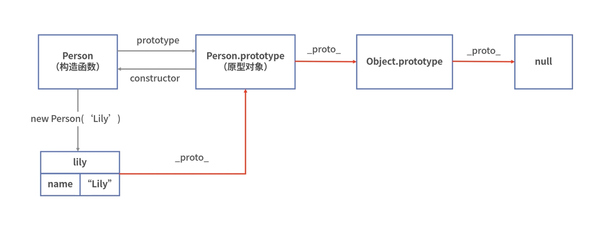

问题
JavaScript 的函数怎么也是个对象？
1.JavaScript 中除了基本类型，其他都是对象，Symbol 也是基本数据类型。
2.函数是一种特殊的对象，它也拥有属性和值，有一个特别的属性 prototype，该属性就是函数的原型对象。
3.函数的原型对象(prototype) 都拥有 constructor 属性，该属性指向与之关联的构造函数。__proto__和 prototype 到底是啥关系？
1.每个对象都有__proto__属性来标识自己所继承的原型对象，但只有函数才有 prototype 属性。
2.每个函数都有一个 prototype 属性，该属性为函数的原型对象。
3.通过将实例对象的__proto__属性赋值为其构造函数的原型对象 prototype，JavaScript 可以使用构造函数创建对象的方法，来实现继承。JavaScript 中对象是怎么实现继承的？
通过原型链访问对象的方法和属性，找到返回对应的值，直到访问Object.prototype的原型对象 null 仍没找到的，返回 undefined。JavaScript 是怎么访问对象的方法和属性的？
使用 __proto__ 和 prototype 实现继承
通过将实例对象的 __proto__ 属性赋值为其构造函数的原型对象 prototype，JavaScript 可以使用构造函数创建对象的方法，来实现继承。
构造函数 new 形式
1 | function Person(name) { |
JavaScript 引擎实际执行
1 | const lily = {} |
原型链
以上面代码为例说明原型链：对象实例 lily 的原型对象为 Person.prototype，Person 的原型对象为 Person.prototype；
Person.prototype 是一个普通的 Object，它的原型对象为 Object.prototype，Object.prototype 的原型对象为 null。

继承方式
1.原型链继承
通过将子类的原型指向父类的实例。
优点：
- 实现简单，易于实现
- 父类新增的原型方法和原型属性，子类都能访问到
缺点：
- 无法实现多继承
- 来自原型对象的所有属性被所有实例共享
- 创建子类实例时，无法像父类构造函数传参
- 要想为子类新增属性和方法，必须在
Student.prototype = new Person()之后执行，不能放到构造器中
2.借用构造函数继承
在子类型构造函数中通用 call()调用父类型构造函数
优点：
- 可以继承多个父类
- 父类的引用属性不会共享
- 可以给父类传递参数
缺点：
- 只能继承父类的实例属性和方法，不能继承原型属性和方法
- 实例并不是父类的实例，只是子类的实例
- 无法实现函数复用，每个子类都用父类实例函数的副本，影响性能
3.组合继承（原型链继承+借用构造函数继承）
通过调用父类构造，继承父类的属性并保留传参的优点，然后通过将父类实例作为子类原型，实现函数复用。
优点：
- 可以继承实例的属性/方法，也可以继承原型属性/方法
- 父类的引用属性不共享
- 可以给父类传递参数
- 函数可复用
缺点：
- 调用了两次父类构造函数，生成了两份实例
4.寄生式继承
创建一个实现继承的函数,以现有对象原原型创建新对象并增强,然后返回新对象。
优点：
- 简单方便实现
缺点：
- 引用类型会被共享
5.寄生组合式继承
将子类的原型对象设置为父类的原型对象，并且调用 call 继承父类的实例和方法。
1 | // 寄生组合式继承:这个过程既实现了继承，又没有去调用Super |
优点：
- 不用调用两次父类的构造函数
缺点：
- 父类原型
6.原型式继承
创建一个函数，函数里包括一个构造函数将现有对象作为原型对象，利用构造函数创建新的对象并返回。
1 | function object(o){ |
class 和 extends
- class
ES 6 引入了 class 语法，方便定义构造函数和继承。对 class 的属性和方法进行设置，实际上是对构造函数原型的属性和方法进行设置。
通过以下代码，我们可以看到：
sayHello，是定义在实例的原型中的。
1 | class Person { |
- extends
ES6 类的继承其实就是基于寄生组合继承来实现的。
1 | class Person { |
思考
JavaScript 的函数和对象是怎样的关系？
函数是一种特殊类型的对象，拥有 prototype 属性，该属性拥有 constructor 属性，指向与之关联的构造函数。__proto__和 prototype 都表示原型对象，它们有什么区别呢？
虽然都表示原型对象，__proto__是除了 null 之外所有的对象都拥有的属性，prototype 是函数特有的属性。JavaScript 中对象的继承和原型链是什么关系？
对象通过原型链实现继承。对象实例 lily 的原型对象指向构造函数的原型对象，形成原型链，实现继承。